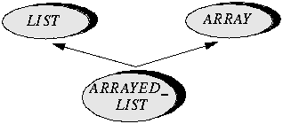

Inheritance, the other fundamental generalization mechanism, makes it possible to define a new class by combination and specialization of existing classes rather than from scratch.
The following simple example, from the Data Structure Library in EiffelBase, is typical. LIST, as indicated, describes lists in any meaningful representation. One such representation if the lists have a fixed number of elements uses an array. We may define the corresponding class by combination of LIST and ARRAY, as follows:
The inherit... clause lists all the "parents" of the new class, which is said to be their "heir". (The "ancestors" of a class include the class itself, its parents, grandparents etc.; the reverse term is "descendant".) Declaring ARRAYED_LIST as shown ensures that all the features and properties of lists and arrays are applicable to fixed lists as well. Since the class has more than one parent, this is a case of multiple inheritance.
Standard graphical conventions serve to illustrate such inheritance structures:

An heir class such as ARRAYED_LIST needs the ability to define its own export policy. By default, inherited features keep their export status (publicly available, secret, available to selected classes only); but this may be changed in the heir. Here, for example, ARRAYED_LIST will export only the exported features of LIST, making those of ARRAY unavailable directly to ARRAYED_LIST's clients. The syntax to achieve this is straightforward:
Another example of multiple inheritance comes from a windowing system based on a class WINDOW, close to actual classes in EiffelVision. Windows have graphical features: a height, a width, a position, routines to scale windows, move them, and other graphical operations. The system permits windows to be nested, so that a window also has hierarchical features: access to subwindows and the parent window, adding a subwindow, deleting a subwindow, attaching to another parent and so on. Rather than writing a complex class that would contain specific implementations for all of these features, it is preferable to inherit all hierarchical features from TREE (a class in EiffelBase describing trees), and all graphical features from a class RECTANGLE.
Inheritance yields remarkable economies of effort -- whether for analysis, design, implementation or evolution -- and has a profound effect on the entire software development process.
The very power of inheritance demands adequate means to keep it under control. Multiple inheritance, in particular, raises the question of name conflicts between features inherited from different parents; this case will inevitably arise in practice, especially for classes contributed by independent developers. Such a name conflict may be removed through renaming, as in
Here, if both A and B have features named x and y, class C would be invalid without the renaming.
Renaming also serves to provide more appropriate feature names in descendants. For example, class WINDOW may inherit a routine insert_subtree from TREE. For clients of WINDOW, however, such a routine name is no longer appropriate. An application using this class for window manipulation needs coherent window terminology, and should not be concerned with the inheritance structure that led to the implementation of the class. So you may wish to rename insert_subtree as add_subwindow in the inheritance clause of WINDOW.
As a further facility to protect against misusing the multiple inheritance mechanism, the invariants of all parent classes automatically apply to a newly defined class. So classes may not be combined if their invariants are incompatible.
 Previous
Chapter
Previous
Chapter  Table
of Contents
Table
of Contents  Next
Chapter
Next
Chapter
 -
-
Copyright © 1996 ISE Inc. <info@eiffel.com>
-
Please send comments to <webmaster@eiffel.com>
Last update: December 1996